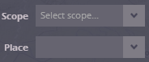
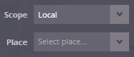
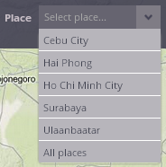
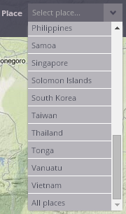

Selection of the place of interest
This menu lets you select the place (territory) of interest.
To enable the selection of the "Place", Scope must be already selected – if not, selection of the "Place" remains disabled.

For each Scope, a different set of "Places" is available in the application:
The Local scope enables you to select the area of one of five cities covered by land cover classification produced in the frame of the PUMA project by the GISAT company; all of these cities are situated in the East Asia and Pacific region. Cebu City (Philippines), Hai Phong and Ho Chi Minh City (both Vietnam), Surabaya (Indonesia) and Ulaanbaatar (Mongolia) are provided at the list. It is possible to start either with one of the cities, or with the complete set of the cities, by selecting "All places".

The National scope gives you an opportunity to select one of the countries from the East Asia and Pacific region or to start with the overview of all countries in the region, by selecting the option "All places".

The Regional scope - you can start by selecting the "region" of interest - by now, the East Asia and Pacific region is available as a representation of the region.